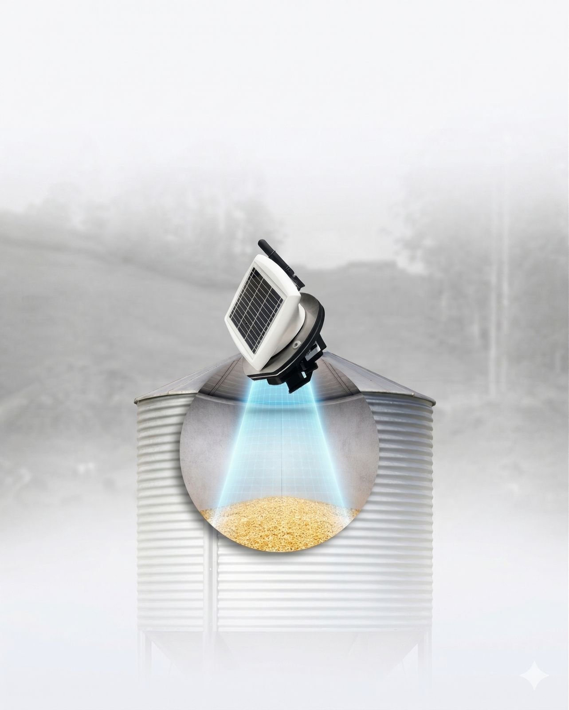

sensors
Insylo
Todo lo que necesitas para sacar el máximo provecho a tu sensor 3D, en un solo lugar.
Aquí encontrarás paso a paso cómo instalar, configurar, mantener y aprovechar al máximo el sistema de medición de alimento en silos más preciso y rentable.
Ver sus componentes arrow_forward
¿Necesitas ayuda?
Contacta a nuestro equipo de soporte
person
Damián García
damian.garcia@asimetrix.co
+57 (304) 666 0685
person
Manuela Chavarría
manuela.chavarria@asimetrix.co
+57 (318) 220 2707